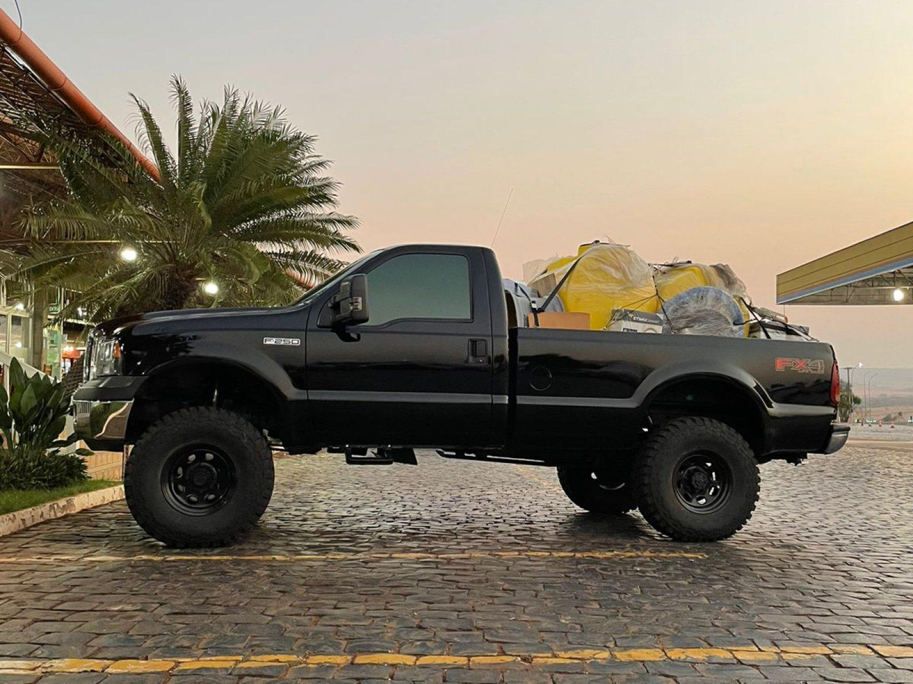

;
reveja a ford f250 a camionete mais sonhada entre os brasileiros Ela
produz potência máxima em RPMs mais baixas do que qualquer outro motor a 2.600 rpm. A Ford F-250 Lariat 2022 apresenta forte desempenho com seu motor V8 6.7 Power Stroke Turbo Diesel, que produz incríveis 145,16 Kgfm de torque e 481 cv de potência, as melhores classificações de potência em sua categoria.